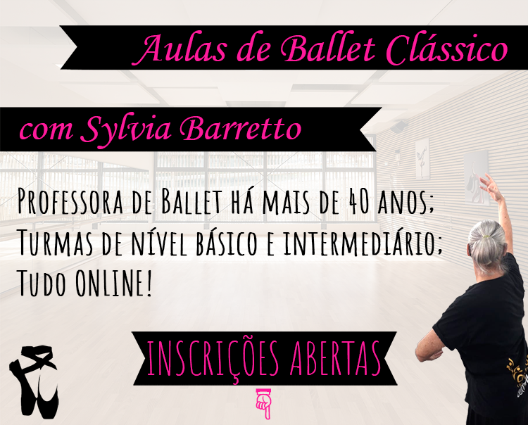

Nossas turmas de Ballet Clássico estão formadas!
São poucas vagas!
Caso tenha interesse, prossiga clicando no botão de Inscrever-se na turma desejada.
A contribuição é voluntária: cada um colabora com o valor que pode.
Essas são minhas missões durante a pandemia: Oportunizar o ballet com meus conhecimentos e experiência aos quem tem interesse em praticar e aprender; Mostrar que é possível fazer aulas de Ballet de qualidade em casa.
Quinta-Feira, 19h às 20h - Nível Básico